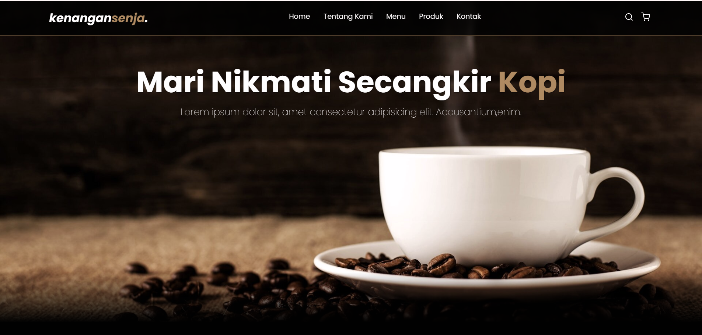

Web Application • Proyek Unggulan
Kenangan Senja
Website ini adalah platform penjualan kopi berbasis web (E-Commerce) yang dirancang untuk memudahkan pelanggan dalam melihat katalog produk kopi, memilih produk, melakukan pemesanan, dan menyelesaikan transaksi secara online. Website ini juga menyediakan halaman khusus admin untuk mengelola produk, kategori, pesanan, data pelanggan, serta memantau transaksi penjualan. Tujuan utama pengembangan website ini adalah memperluas jangkauan pemasaran, mempermudah proses pembelian, serta meningkatkan efisiensi pengelolaan penjualan kopi melalui sistem digital.
![Tangkapan layar [Nama Proyek 2]](assets/images/projects/inpeace.png)
![Tangkapan layar [Nama Proyek 3]](assets/images/projects/women.png)
![[Nama Sertifikat 2]](assets/images/certificates/ibm.png)